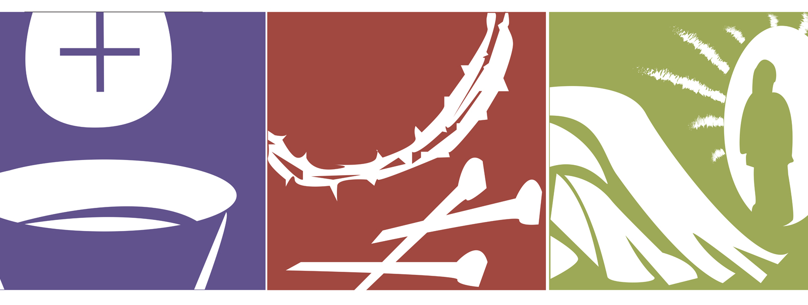

El Jueves Santo es el primer día de del Triduo Pascual, en este se celebra la Misa vespertina de la Cena del Señor en la cual se recuerda la Última cena y se expresa el amor incondicional de Dios. Es una misa en la cual se conmemora la institución de la Eucarística y se realiza el Lavatorio de los pies, así como lo hizo Jesús a sus apóstoles.
Viernes Santo
El Jueves Santo es el primer día de del Triduo Pascual, en este se celebra la Misa vespertina de la Cena del Señor en la cual se recuerda la Última cena y se expresa el amor incondicional de Dios. Es una misa en la cual se conmemora la institución de la Eucarística y se realiza el Lavatorio de los pies, así como lo hizo Jesús a sus apóstoles.Sabado Santo
El Jueves Santo es el primer día de del Triduo Pascual, en este se celebra la Misa vespertina de la Cena del Señor en la cual se recuerda la Última cena y se expresa el amor incondicional de Dios. Es una misa en la cual se conmemora la institución de la Eucarística y se realiza el Lavatorio de los pies, así como lo hizo Jesús a sus apóstoles.Domingo Santo
El Jueves Santo es el primer día de del Triduo Pascual, en este se celebra la Misa vespertina de la Cena del Señor en la cual se recuerda la Última cena y se expresa el amor incondicional de Dios. Es una misa en la cual se conmemora la institución de la Eucarística y se realiza el Lavatorio de los pies, así como lo hizo Jesús a sus apóstoles.